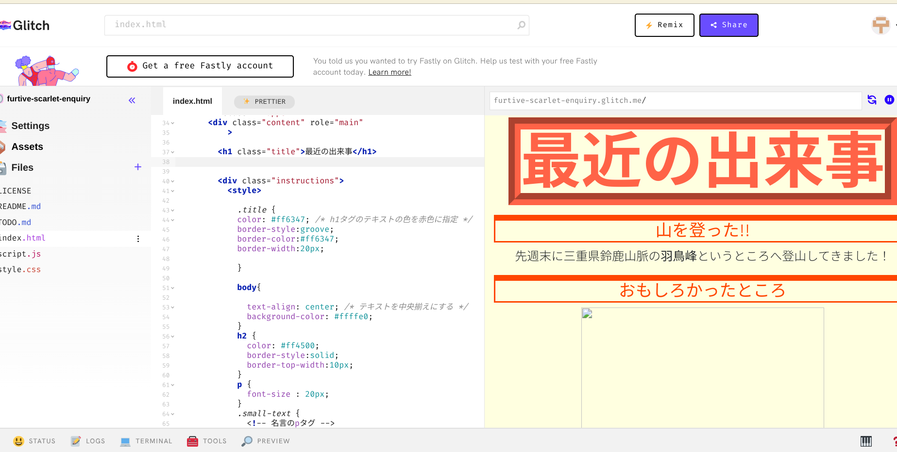
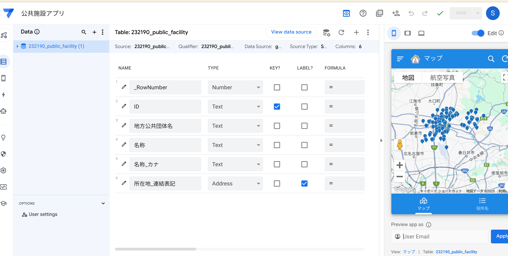
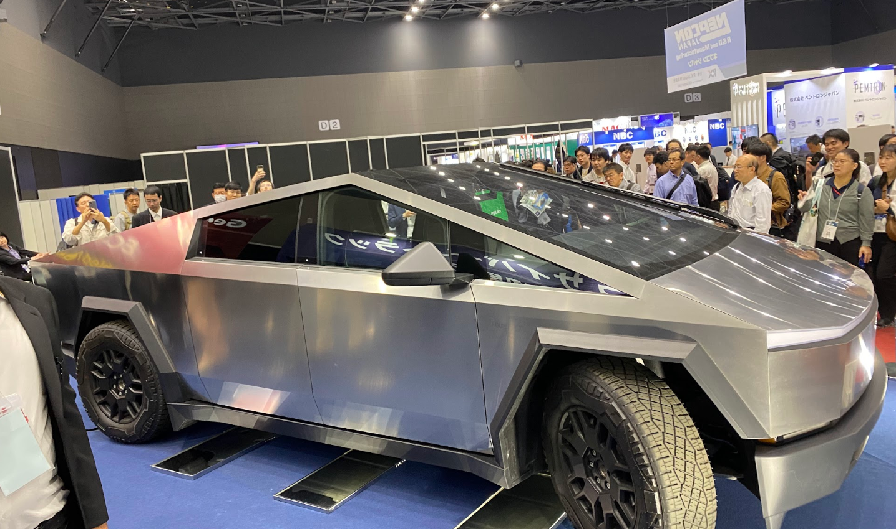

chatGPTより生成
スマホは横向きにして見てください！
やまぐちの一年間をお届け
About
About
一年間の活動記録をまとめてみました
この画像は、AIやスマートシティなどの最先端技術をテーマにしたビジネス情報の概念を表現しています。上空のデジタル要素は、スマートシステムやデータ分析を示し、ITと都市管理への統合を表現しています。
こちらの画像と文章は生成AIに作成させました。生成AIの活用方法なども勉強しました。
このように、一年間のゼミまとめとして、htmlファイルを作成してみました！ちなみに、右下にあるチャットボットはちいかわと会話できるものです。こちらもゼミ活動でさくせいしました！
Event
Event

industry
産学連携
産学連携とは企業と大学が連携して社会的価値を創造していく取り組みです。
トヨタモビリティ東名古屋さんと提携して「レクサスオーナー体験」提案しました。
企画立案という貴重な経験をさせていただきました。感想等をこちらに書きました。

Analytics
データ分析
ゼミの取り組みとは別で、個人的にデータ分析に努力しました。
Jamoviを用いて、コロナショックによる消費関数の低下を分析しました。
その様子がこちらです。個人的にPythonの勉強も取り組みました。
Activity
Activity
一年間の活動記録
- 4月: 自己紹介・LLMのレクチャー
- 5月: Github、glitchを用いたhtmlの実習
- 6月: AppSheet、データジャーナルの活用事例を勉強
- 7月: 実際にデータジャーナルを作る、ポートメッセ
- 8月: 夏休み
- 9月: ゼミ旅行、streamlitでBPMアプリを開発する
- 10月: 産学連携開始、ポートメッセにも行く
- 11月: 産学連携発表、チャットボットの開発が始まる
- 12月: チャットボット制作・発表

5月：自身の部活について書きました

6月：地図アプリを作りました！

10月：ポートメッセ名古屋へ視察！